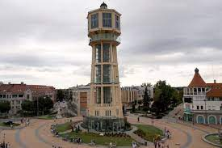

Látnivalók
- Víztorony
Története:
A víztornyot 1912-ben építették és kezdetben tényleg a vízellátásban volt nagy szerepe. A Kurz Részvénytársaság tervezése alapján 1935-ben átépítették. 1944-től a vízmű nem üzemelt. A második világháború alatt a németek tüzérségi megfigyelő állomásának adott helyet, majd egy páncéltörő ágyú lövedéke megrongálta. A helyreállításokra 1946-ban került sor. 1953-ig a község tulajdonában állt és közüzemként működött, majd vállalat lett. A víztorony szerepe a vízellátásban a 70-es évekig tartott, utána 1990-es évek elejéig üresen állt. 1992-től többek között a Tourinform irodának adott otthont. 1998-ban újjáépítették a belsejét, de külsőleg nem renoválták. Ebben az évben adta át az állam az önkormányzatnak. Második emelete egy panoráma terasznak és egy kiállító-teremnek adott otthont 2001-től. 2001 őszén a Tourinform iroda elköltözött, a torony bezárta kapuit, renoválásra várt. 2002-ben sürgőssé vált a felújítása. Több évig ment a huzavona a felújítással kapcsolatban, végül 2010-ben megkezdték a renoválását. .
Felújítása
A 2010 nyarára tervezett átadása elmaradt. Több olyan hír is napvilágot látott, hogy a torony megsüllyedt, megdőlt. Akkor a megnyitását a következő év végére tűzték ki. 2011 májusára a munkálatok befejeződtek, de a megnyitásra még nem került sor. 2011. november 25-én felavatták a tornyot a Siófoki Városnapon. Két napon át üzemeltették a lifteket, de a kávézó még nem nyílt meg, üzemeltetőkre vártak. 2012. június 22-én négy napos programsorozat keretében nyitotta meg kapuit a nagyközönség előtt a Sió Plázával, és a felújított térrel együtt.
A torony napjainkban
A látogatókat két panoráma lift viszi fel a torony felsőbb szintjeibe, ahol kávézó, oxigénbár és hazánkban egyedülálló interaktív élményközpont várja őket. Az élményközpontban a Samsung és a Microsoft közös fejlesztése a Surface 2. Ez egy 10 centiméter vastag, érintésérzékeny, nagy-formátumú monitor, ami asztalnak is használható, falra is szerelhető, akár ebédelni is lehet rajtuk. Az élményközpont alatti szinten található a Szentkirályi Oxigénbár és a Panoráma Kilátó. Az oxigénbár hazánkban a víztoronyban nyílt meg elsőnek, ami elsősorban a Szentkirályi oxigénnel dúsított ásványvizeinek népszerűsítésére jött létre. Ezen az emeleten tökéletes kilátás nyílik a Balaton túlpartjára, a keleti medencéjénél húzódó helyenként 80 méteres löszfalra, a Somogyi-dombságra és a Hegyhát lankáira valamint a Tihanyi-félszigetre. A felújítás 420 millió forintos projekt keretén belül jött létre, amihez az Új Széchenyi Terv Dél-Dunántúli Operatív Programja nyújtott 300 milliós támogatást. A Samsung élményközpont padlószintje 33,60 méter, az Oxigénbár padlószintje 30,00 méter, a kilátó körterasz padlószintje pedig 26,70 méter magasan van a tér szintje felett.

- Evangélikus templom
- Dualizmus kori villák
- Sarlós Boldogasszony-templom
- Sió-zsilip
- Petőfi sétány
- Jókai park